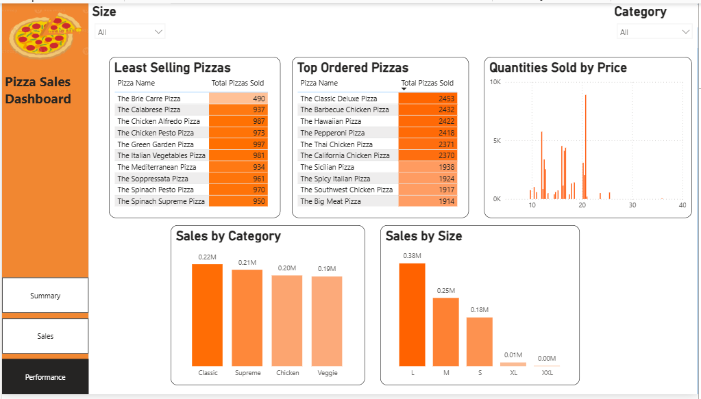
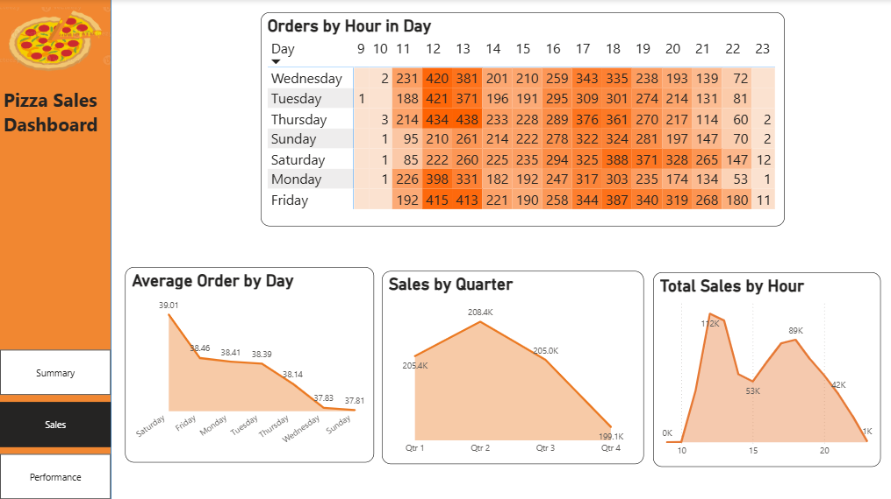

Power BI · DAX
Which pizzas were carrying the menu?
One year of orders for a fictional pizza restaurant, modelled in Power BI, to decide what to take off the menu and when to staff the kitchen. The file is the Maven Analytics Pizza Place sample, so the levels are a worked example.

-
Frame
Two decisions. Which sizes and names come off the menu, and which hours need more people in the kitchen.
-
Audit
Four tables. An order line is one pizza on one order. Orders, pizzas, and pizza types sit behind that line, so revenue is quantity times price and a pizza is counted in one category. Power Query promoted the pizza-type header and added hour and weekday from the order timestamp. The load had no missing rows. The year is a teaching dataset, not a live store.
-
Baseline
The starting menu keeps every size and every name. The year is $818K across 21,350 orders and 49,570 pizzas. Large is $0.38M, Medium $0.25M, and Small $0.18M. Classic, Supreme, Chicken, and Veggie each sit near $0.2M, so category is not where a cut shows up.
-
Claim
XL and XXL together are under $10K of that $818K, about 1% of the year, against $380K for Large. Brie Carre sold 490 pizzas. The next-lowest names still sold about 930 to 1,000. Orders peak at 12–1 PM, about $112K in that hour across the year, and again at 5–7 PM, near $89K. Mid-afternoon drops to about $53K.
-
Recommendation
Drop XL and XXL. Review Brie Carre before the next menu print, and keep the kitchen stocked for Classic Deluxe and Barbecue Chicken. Staff up for lunch and early evening. A later year in which XL and XXL clear a few percent of revenue would put those sizes back. This file cannot run that check.
